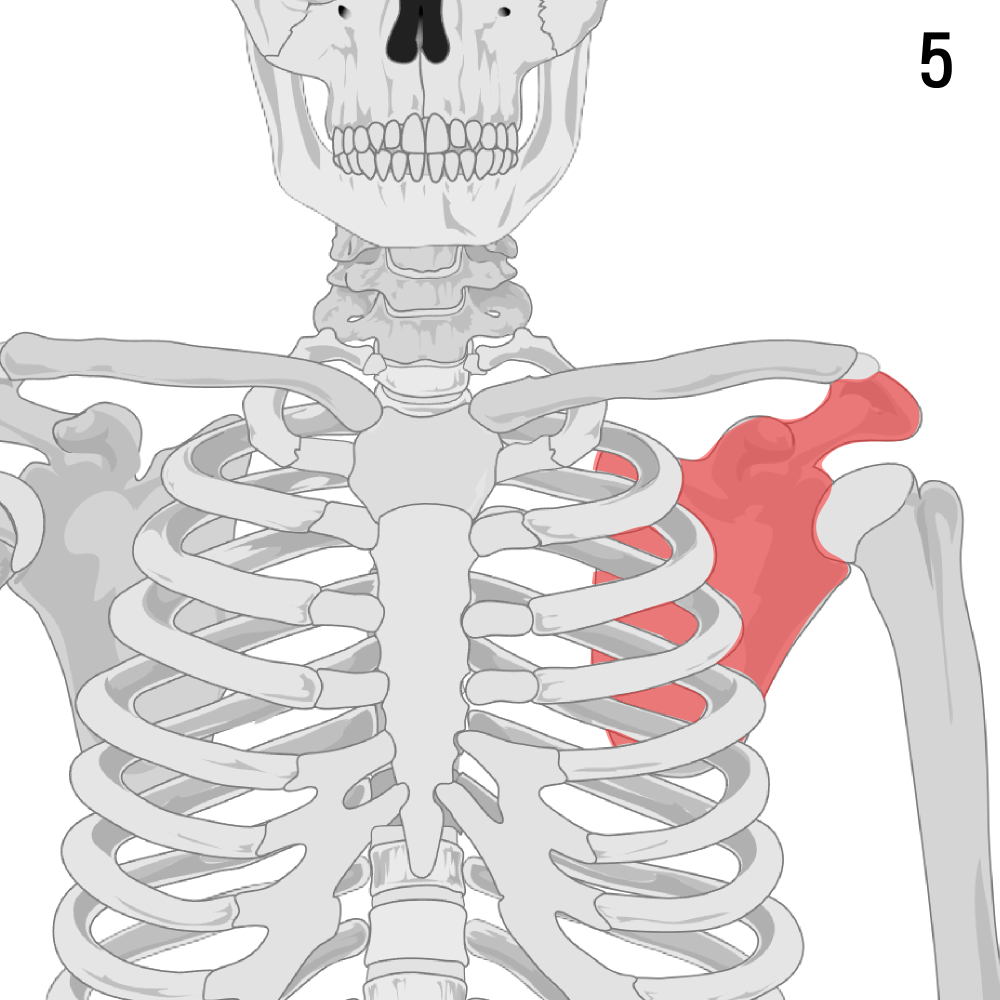
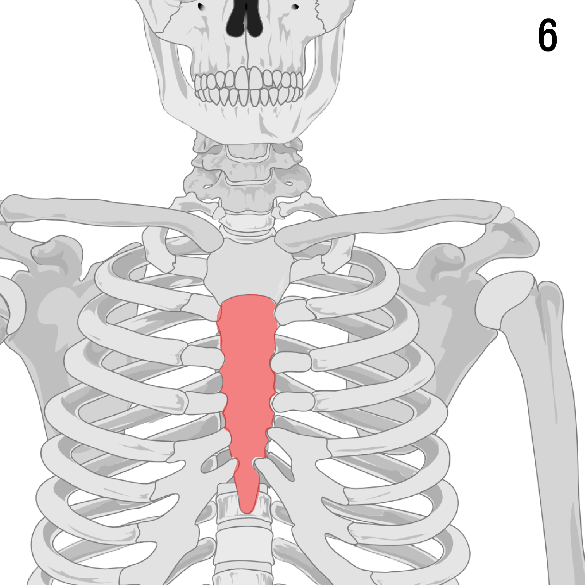

Select bones
ส่วนที่ 1 - 2
ส่วนที่ 3 - 4
ส่วนที่ 5 - 6
ส่วนที่ 7 - 8
ส่วนที่ 9 - 10
ส่วนที่ 11 - 12
ส่วนที่ 13 - 14
ส่วนที่ 15 - 16
ส่วนที่ 17 - 18
ส่วนที่ 19 - 20
ส่วนที่ 21 - 22
ส่วนที่ 23 - 24
ส่วนที่ 25 - 26
 